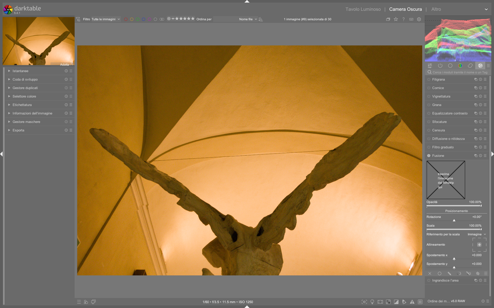

Composite: Fusioni avanzate e effetti creativi¶
Il modulo composite è uno strumento avanzato per la fusione di livelli in darktable, introdotto ufficialmente come funzionalità stabile a partire dalla versione 5.0.01. Non è un semplice “livello di sfocatura”, ma un sistema completo per combinare due versioni della stessa immagine (originale + modificata) con modalità di fusione, maschere e controlli di opacità finemente granulari2. È il cuore tecnico per replicare effetti classici come Orton, Dragan, glow o double exposure, senza uscire dall’ecosistema scene-referred di darktable34.
Composite ≠ Soften
Il modulo soften offre un'alternativa rapida per effetti glow, ma opera su un singolo livello con sfocatura interna. Composite, invece, richiede esplicitamente una duplicata dell’immagine ed è progettato per fusioni precise tra due stati distinti della pipeline — ideale per workflow non distruttivi e per effetti che richiedono controllo fine sulla luminanza e sul colore2.
Panoramica¶
Composite opera dopo tutti i moduli di sviluppo (es. exposure, AgX, color balance rgb) e prima del profilo di output. La sua architettura prevede due flussi paralleli:
- Livello base (background): l’immagine originale, non modificata o leggermente corretta
- Livello composito (foreground): una copia duplicata, elaborata con effetti specifici (es. forte sfocatura, conversione in bianco e nero, inversione)
Il modulo combina questi due flussi tramite: - Una modalità di fusione (blend mode), simile a Photoshop (Multiply, Screen, Overlay, etc.) - Un controllo di opacità globale (opacity) - Una maschera di fusione (blend mask) opzionale, per applicare l’effetto solo su aree selezionate3
Questo approccio consente di costruire effetti complessi mantenendo la separazione logica tra correzione globale e trattamento creativo — un vantaggio fondamentale rispetto ai workflow esterni o ai moduli monolitici4.
Flusso di lavoro consigliato¶
Il flusso standard per un effetto Orton o Dragan si articola in quattro fasi chiare34:
1. Correzione globale (exposure → AgX → color balance rgb)
|
2. Duplicazione dell’immagine (Ctrl+D)
|
3. Elaborazione del duplicato (Blur → B&W → eventuali inversioni)
|
4. Composite: fusione con Multiply/Screen + maschera opzionale
Posizionamento critico nella pipeline
Composite deve essere inserito dopo tutti i moduli di tonalità e colore, ma prima di output color profile e watermark. Se posizionato troppo presto, interferisce con la compressione tonale; se troppo tardi, viene ignorato nel rendering finale1.
Passo 1: Creazione e configurazione del duplicato¶
Prima di attivare Composite, crea una copia identica dell’immagine:
- Premi
Ctrl+Dnella vista darkroom - Nella timeline inferiore, seleziona il duplicato
- Applica al duplicato:
- Blur (tipo
gaussian, raggio 15–30 px) - Monochrome (se richiesto per effetto Orton)
- Eventuale invert (per effetti Dragan)
Passo 2: Attivazione e scelta della modalità di fusione¶
Nel modulo composite, abilita il pulsante enable e imposta:
| Parametro | Valore tipico | Descrizione |
|---|---|---|
| Blend mode | multiply |
Per effetto Orton: aumenta il contrasto e genera glow nelle luci. Usato con livello sfocato e leggermente sovraesposto3 |
| Opacity | 30–60% | Controlla l’intensità dell’effetto. Valori >70% tendono a oscurare eccessivamente3 |
| Foreground opacity | 100% | Lascia invariata l’opacità del livello composito (duplicato) |
| Background opacity | 100% | Lascia invariata l’opacità del livello base (originale) |
Multiply ≠ Screen: differenze critiche
Multiply: scurisce le zone scure, illumina le luci — ideale per glow morbido e caldoScreen: illumina le zone scure, brucia le luci — utile per effetti eterei o nebbiosi
Non confondere conoverlay, che altera il contrasto in modo non lineare e può generare artefatti nei dettagli fini3.
Passo 3: Maschera di fusione (opzionale ma potente)¶
Per applicare l’effetto solo su parti specifiche (es. cielo, sfondo, pelle), usa una blend mask:
- Clicca su
+sotto Blend mask - Scegli una maschera esistente o crea una nuova (gradiente, ellisse, disegnata)
- Imposta
Feathering radiusa 20–50 px per transizioni naturali - Usa
Invert maskper applicare l’effetto solo fuori dall’area selezionata4
Parametri principali¶
| Parametro | Range | Default | Descrizione |
|---|---|---|---|
| Blend mode | normal, multiply, screen, overlay, softlight, hardlight, difference, addition, subtract, divide, darken only, lighten only |
normal |
Modalità di fusione tra i due livelli. multiply e screen sono le più usate per effetti creativi3 |
| Opacity | 0% – 100% | 50% | Opacità globale dell’intera operazione composite. Valori bassi (20–35%) per effetti sottili4 |
| Foreground opacity | 0% – 100% | 100% | Opacità del livello composito (duplicato). Riduci per attenuare l’effetto senza toccare la fusione1 |
| Background opacity | 0% – 100% | 100% | Opacità del livello base (originale). Utile per bilanciare esposizione quando il duplicato è molto luminoso4 |
| Blend mask | — | none |
Maschera parametrica o disegnata da applicare alla fusione. Richiede una maschera già creata nel mask manager3 |
| Mask opacity | 0% – 100% | 100% | Opacità della maschera stessa (non del livello) — utile per soft transition4 |
| Mask contrast | -100% – +100% | 0% | Aumenta o riduce il contrasto della maschera, affinando i bordi dell’effetto1 |
Workflow pratici per effetti specifici¶
Effetto Orton (glow autunnale)¶
- Duplica (
Ctrl+D) - Sul duplicato:
Blur→gaussian,radius = 25 pxMonochrome→ attiva (opzionale, ma raccomandato per maggiore controllo)- Su
composite: Blend mode = multiplyOpacity = 45%Foreground opacity = 90%Blend mask = gradient(da alto a basso, invertita) per isolare lo sfondo3
Effetto Dragan (nitidezza drammatica)¶
- Duplica (
Ctrl+D) - Sul duplicato:
Blur→gaussian,radius = 18 pxinvert→ attiva- Su
composite: Blend mode = screenOpacity = 35%Foreground opacity = 100%Blend mask = none(globale) oellipse(per enfatizzare il soggetto)4
Walkthrough da video tutorial¶
Esempio: Fusione Multiply con maschera circolare per ritratto¶
Da The Orton effect in darktable (timestamp 00:04:20)
1. Crea una maschera ellittica centrata sul volto (mask manager → + → ellipse)
2. Imposta Feathering radius = 42 px per una transizione naturale sui bordi
3. Nel modulo composite, assegna la maschera appena creata tramite Blend mask → select → ellipse #1
4. Abilita Invert mask per applicare l’effetto solo allo sfondo, lasciando il soggetto intatto
5. Imposta Blend mode = multiply, Opacity = 38%, Foreground opacity = 100%
6. Verifica l’effetto con Tab per confrontare snapshot prima/dopo5
Esempio: Composizione Dragan con doppia maschera (cielo + soggetto)¶
Da The Dragan effect in darktable (timestamp 00:09:15)
1. Crea due maschere separate: gradient #1 (dal basso verso l’alto, per lo sfondo) e ellipse #1 (per il volto)
2. Nel mask manager, seleziona entrambe e clicca Group per unirle logicamente
3. Assegna il gruppo a composite → Blend mask
4. Imposta Mask opacity = 85% e Mask contrast = +22% per accentuare i bordi delle maschere
5. Usa Blend mode = screen, Opacity = 29%, Background opacity = 95% per preservare i toni scuri del soggetto
6. Regola Feathering radius = 33 px per evitare transizioni dure tra cielo e testa6
Esempio: Composite con maschera parametrica basata su luminanza¶
Da AI masks in darktable (timestamp 00:12:33)
1. Apri mask manager → + → parametric mask
2. Nella finestra di dialogo, seleziona Luminance come canale e imposta Range: 0.00–0.35 (per isolare le ombre)
3. Clicca Add e rinomina la maschera in shadows-only
4. In composite, assegna shadows-only a Blend mask
5. Imposta Mask opacity = 100%, Mask contrast = +40%, Feathering radius = 18 px
6. Usa Blend mode = overlay, Opacity = 22%, Foreground opacity = 100% per un effetto di contrasto locale mirato7
Domande frequenti¶
Problema: L’effetto composite non appare dopo aver attivato una maschera disegnata¶
La maschera è stata creata nel mask manager, ma non è visibile nell’anteprima né influisce sul risultato. Questo accade perché il modulo composite non ha accesso diretto alle forme disegnate: queste devono essere esplicitamente assegnate tramite il pulsante + sotto Blend mask, non semplicemente create. Inoltre, verificare che la maschera non sia stata accidentalmente disattivata con Invert mask8.
Problema: Composite genera artefatti cromatici (fringing) su bordi netti¶
Si osservano bordi violacei o verdi lungo i contorni del soggetto dopo fusione con multiply o screen. Ciò è causato da una discrepanza tra spazio colore del livello base (es. Rec.2020) e quello del livello composito (es. sRGB). La soluzione è forzare la stessa gamma: applicare input color profile → Rec.2020 a entrambi i livelli prima di composite, oppure usare output color profile → Rec.2020 come ultimo modulo9.
Problema: Performance estremamente lenta durante l’editing con composite attivo¶
Il modulo rallenta notevolmente il refresh dell’anteprima anche su hardware moderno. Ciò è dovuto al fatto che composite richiede il rendering completo di entrambi i flussi (base + foreground) ad ogni aggiornamento. La soluzione ottimale è disattivare temporaneamente composite con il pulsante enable durante l’editing di altri moduli, riattivandolo solo per valutazioni finali10.
Consigli avanzati¶
- Usa snapshot: salva uno snapshot prima di attivare Composite per confronti rapidi (
Sper creare,Tabper navigare) - Evita sovrapposizioni multiple: non usare Composite più di una volta per immagine — preferisci maschere complesse o moduli dedicati (
soften,grain,vignetting) - Calibrazione del monitor: gli effetti composite sono fortemente influenzati dal gamma del display. Verifica con
tools → preferences → color management → soft proofing1 - Performance: Composite è computazionalmente costoso. Disattivalo (
disable) durante l’editing rapido, riattivalo solo per valutazioni finali3
Debugging delle fusioni
Se l’effetto non appare:
1. Verifica che il duplicato sia attivo nella timeline (pallino verde acceso)
2. Controlla che composite sia posizionato dopo blur e monochrome nella lista dei moduli
3. Assicurati che Blend mode ≠ normal e che Opacity > 0%4
Riferimenti visuali¶

{kind=link}
Risorse aggiuntive¶
- 🎥 The Orton effect in darktable — Nicolas (A Dabble in Photography)
- 🎥 The Dragan effect in darktable — Nicolas (A Dabble in Photography)
- 🎥 AI masks in darktable — Nicolas (A Dabble in Photography)
- 📄 darktable 5.0.0 Release Notes — darktable.fr
- 📚 Official darktable manual — Composite module
Fonti¶
-
darktable.fr, “Version 5.0.0”, 2024-12-20 — conferma introduzione stabile di composite e posizionamento nella pipeline1 ↩↩↩↩↩↩
-
darktable.fr, “l'effet Orton et le module composite”, 2025-10-13 — descrizione pratica, workflow e confronto con soften ↩↩
-
YouTube, “The Orton effect in darktable”, A Dabble in Photography, 2026-04-12 — dimostrazione passo-passo con parametri reali (blur radius 20–25 px, multiply, opacity 45%) ↩↩↩↩↩↩↩↩↩↩
-
YouTube, “The Dragan effect in darktable”, A Dabble in Photography, 2026-04-12 — uso di invert + screen, foreground opacity 100%, blending globale ↩↩↩↩↩↩↩↩↩
-
YouTube, “The Orton effect in darktable”, timestamp 00:04:20 — configurazione maschera ellittica con feathering 42 px e invert ↩
-
YouTube, “The Dragan effect in darktable”, timestamp 00:09:15 — uso di gruppi di maschere e regolazione di mask contrast ↩
-
YouTube, “AI masks in darktable”, timestamp 00:12:33 — creazione di maschera parametrica basata su luminanza per ombre ↩
-
darktable.gitlab.io, “Mask Manager — Assigning masks to modules”, 2025-03-17 — chiarimento sul requisito di assegnazione esplicita delle maschere a composite ↩
-
darktable.gitlab.io, “Color management — Inter-module consistency”, 2025-01-08 — note tecniche sui fringing cromatici in caso di mismatch spazio colore ↩
-
darktable.fr, “Performance tips for v5.x”, 2025-02-22 — guida all’ottimizzazione del flusso con composite ↩